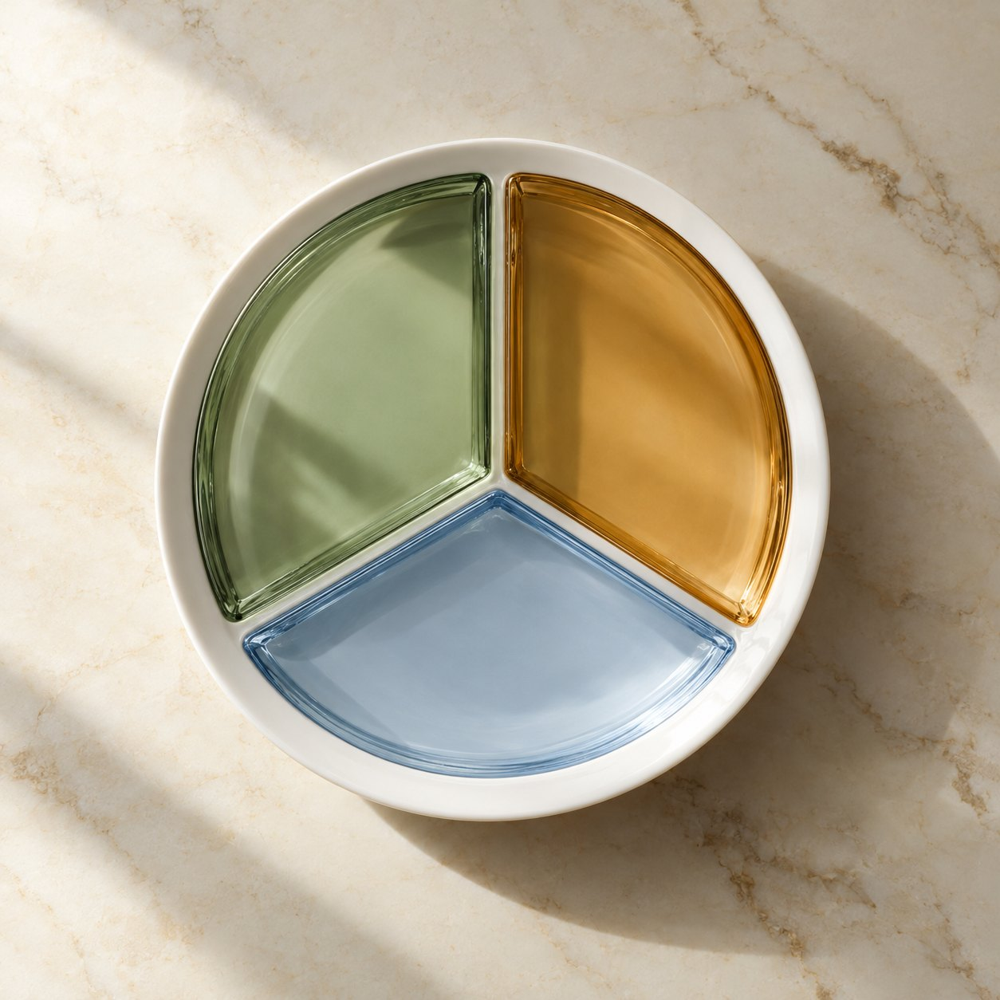

LIVE MASTERCLASS
The Longevity Masterclass
with Julie Gibson Clark
Why I went down this path.
RUNNING FROM
Dementia. Alzheimer's.
The silent decade of decline.
RUNNING TO
My son. Here for him, all the days of his life.
70, still carrying the groceries.
90, still holding a conversation.
Ten years pass. By this test, I age about six.
The speed towards death.
1.0 means one year of aging per calendar year. Most people sit near it.
Julie: 0.65 best, 0.665 across three tests, 0.76 on the latest.
One test. One person. DunedinPACE, Belsky et al., eLife 2022.
How is aging measured?
1One blood draw.
2173 DNA methylation sites, read as a pattern.
3A speed, not an age: how fast 19 organ systems are declining.
Built from the Dunedin Study, a cohort followed from birth. Belsky et al., eLife 2022. Used in more than 65 cohort studies in 18 countries.
Longevity is like a cake.
One root, four branches. Slow the aging and you push all four back at once. The geroscience hypothesis; López-Otín et al., Cell 2023.

Longevity is like a cake.
Nobody has eaten a bowl of icing and called it a cake.
Not wrong. Not first.
Sauna, peptides, stem cells, NAD drips, most supplements, the two-million-dollar program. Not first.
Not wrong. Not first.
Amber: leave it until the cake is baked. Kunutsor et al., Scandinavian Cardiovascular Journal 2024; Laukkanen et al., BMC Medicine 2018.
Not wrong. Not first.
The sauna is what gets me out of bed. The workout happens to be on the way.
Three to seven sessions a week, against two or fewer: 16% lower risk of dying from any cause. 2,575 men, almost 28 years.
The one piece of icing with long-term human data. Kunutsor, Jae, Kurl and Laukkanen, 2024. Heart or blood pressure concerns: ask your doctor first.
Menopause therapy is a layer, not icing.
The window: menopause to ten years after. For healthy women with symptoms, the benefits generally outweigh the risks.
The Menopause Society, 2022. FDA, November 2025: boxed warnings removed. Find a certified practitioner. Your doctor, not a webinar.
Four layers hold up the cake.
Everything in the next forty-five minutes is about those four.
Sleep is the repair shift.
The brain flushes its waste while you sleep. Imaged in living people for the first time in 2024.
Regularity beat duration. The most regular sleepers: 20 to 48% lower risk of dying.
Piantino et al., PNAS 2024. Windred et al., Sleep 2023, 60,977 adults.
Sleep is the repair shift.
Last meal 3 hours before bed. Screens off 1 hour before. Same window, every night.
Borrow the order, not the clock. Pick a bedtime you can repeat.
"I'll sleep when I die," said the person aging at twice the normal speed.
Take the religion out of your diet.
Vegan. Keto. Mediterranean. Carnivore. Not the type of diet. The plate.
Protein is the floor.
Fiber is the lever.
Whole food is the default.

Take the religion out of your diet.
1 lb of vegetables a day.
1 g of protein per pound of goal bodyweight.
Eating window 8 to 6.
Coffee cutoff 10 AM.
Zero alcohol on training days.
of fiber a day. More than 90% of women and 97% of men miss it.
Dietary Guidelines for Americans, 2020 to 2025. Her rules, not a prescription.
The one thing every diet agrees on.
Spikeglucose after a sugary meal
Signalinsulin and nutrient sensing on, all day: a hallmark of aging
Scarsugar bonds to proteins: glycation, HbA1c
Each gram of added sugar, an older biological age: Chiu, Epel and Laraia, JAMA Network Open 2024. Ceiling: under 25 g a day, Huang et al., BMJ 2023.
Your two Monday changes.
That is the Monday plan. Keep it simple.
Same age.
The gap between lifespan and healthspan in the United States, the widest in the world. Worldwide, 9.6 years. Those years are what movement is for.
Garmany and Terzic, Mayo Clinic, JAMA Network Open, December 2024, 183 countries.
Four types of movement, four parts of you.
Weights, for bones and muscle. The predictor: grip strength.
VO2 max, for the heart. The predictor: fitness. Each step up, 11 to 17% lower risk of dying.
Zone 2, for the heart and metabolism. The predictor: 7,000 steps a day.
Mobility and balance, for the brain and the other three. The predictor: one leg, thirty seconds.
López-Bueno 2022; Lang, BJSM 2024; Ding, Lancet Public Health 2025; Mayo Clinic, PLOS One 2024.
Julie Gibson Clark's Weekly Longevity Protocol.
Three strength, two Zone 2, one interval session. More than you need on day one. A walk is a perfectly respectable place to begin.
The layer people skip.
Stress hormones are built for short bursts. When they never switch off, they wear the body down.
The layer people skip.
In. In. Long out.
Two short breaths in through the nose, one long breath out through the mouth. Three times. Thirty seconds. Zero dollars.
The physiological sigh. Balban, Spiegel and Huberman, Cell Reports Medicine 2023, 111 people, five minutes a day for a month.

Julie Gibson Clark's Longevity Protocol.
The day is built backward from bedtime.
9 PM lights out
5 AM wake, water, light
7 AM training, then sauna
8 AM eating window opens, coffee until 10
midday biggest meal, then a walk
3 PM meditation
6 PM last meal, window closes
8 PM screens off
Eating window 8 to 6. Borrow the order, not the clock. Screenshot this one.
Test. Then buy.
You don't need a lab. You need a notebook.
ASK YOUR DOCTOR ABOUT
Vitamin D
Homocysteine
Red blood cell nutrient levels
A supplement is icing. A test tells you where the cake has a hole.
What one person chose.
D3 with K2 [monthly cost]
Magnesium [monthly cost]
B-complex [monthly cost]
Omega-3s [monthly cost]
NOVOS [monthly cost]
One total: [monthly total]
After her own tests. An example, not a shopping list. Julie is affiliated with NOVOS. Full list on her website.
Why. Intention. Resources.
What's my why?
What's my intention?
What are my resources?
Take one away and the other two fall over. When all three are on, the center lights.
It's your life.
Live it well.